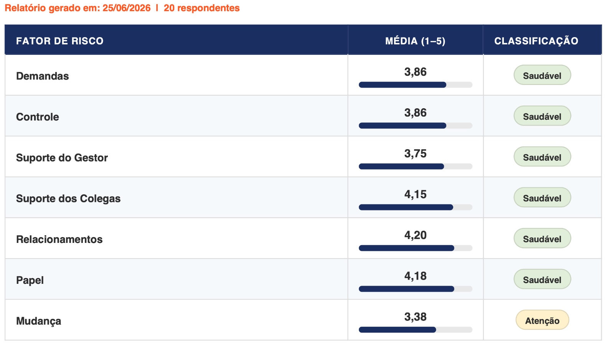
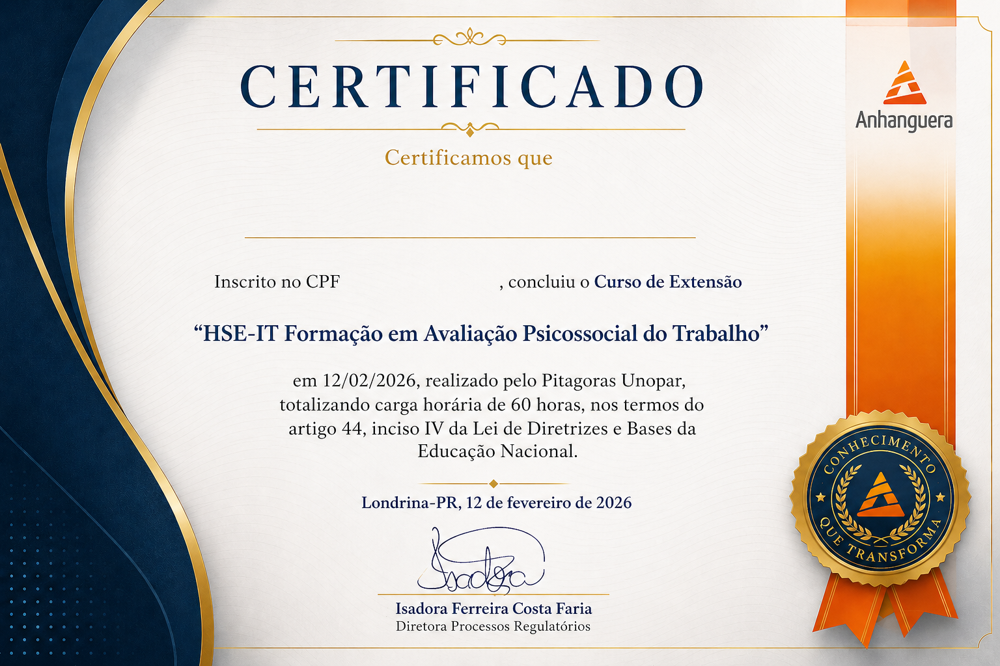

Um dos poucos profissionais autorizados no Brasil a aplicar o HSE-IT te ensina o método certo — enquanto a maioria aplica errado, sem rastreabilidade e exposta a risco.
Formação de extensão universitária em Avaliação Psicossocial do Trabalho, reconhecida pelo MEC. Você sai com relatório técnico defensável, 10 créditos CVAT e 1 ano de acesso pra aplicar.
Garantir minha vaga — R$ 490 (ou 12x de R$ 49,00)Formação completa. Acesso real. Resultado imediato.
60h certificadas — MEC
Extensão universitária reconhecida. Certificado válido em editais, auditorias e processos de habilitação profissional.
10 créditos CVAT inclusos
Válidos por 1 ano. Você aplica com empresas reais na primeira semana, sem custo adicional.
Software Gestor NR-01 incluso
Ferramenta para estruturar e documentar o Programa de Gerenciamento de Riscos conforme a NR-01 atualizada.
Relatório técnico defensável
Gerado automaticamente pela plataforma. Pronto para auditoria, fiscalização e devolutiva ao cliente — sem planilha paralela.

Isso é um relatório real, gerado por um aluno formado
Não é print de sistema, é a saída real da plataforma: classificação automática por dimensão, sem cálculo manual, sem planilha, sem interpretação subjetiva.
Isso é o que você entrega ao cliente na primeira semana de aplicação.
Conteúdo Programático Completo
3 módulos · 30 horas de formação estruturada
Pilar 1 — Compreensão, Confiança e Legitimidade
- Evolução da Saúde Ocupacional: do modelo biomédico ao biopsicossocial
- Riscos psicossociais no trabalho: definição, impacto e legislação
- Origem do HSE-IT: desenvolvimento pela Health and Safety Executive (UK)
- Bases científicas e reconhecimento internacional da ferramenta
- O papel do HSE-IT na gestão preventiva moderna
- Aplicações práticas em diferentes contextos organizacionais
Pilar 2 — Funcionamento Interno e Lógica da Ferramenta
- O construto central do HSE-IT: riscos psicossociais como fenômeno organizacional
- O que o HSE-IT mede e o que não mede (limites e escopo)
- Estrutura geral do instrumento: 35 itens e 7 dimensões
- As 7 dimensões: Demanda, Controle, Suporte do Gestor, Suporte dos Colegas, Relacionamentos, Papel, Mudança
- Escala de medição, pontuação e lógica dos dados
- Benchmarks e interpretação de zonas de risco
- Análise sistêmica e cruzamento de indicadores
Pilar 3 — Competência, Decisão e Ação
- Como aplicar corretamente o HSE-IT: metodologia e boas práticas
- Cuidados metodológicos e éticos na coleta de dados
- Leitura e interpretação de resultados: padrões, contexto e narrativa
- Erros mais comuns na interpretação e como evitá-los
- Transformando resultados em planos de ação estratégicos
- Priorização de intervenções primárias (causa-raiz)
- Integração do HSE-IT com indicadores de RH e Saúde Ocupacional
- Casos práticos e aplicações reais em diferentes setores

Modelo real do certificado emitido ao final do curso · 60h · Reconhecimento MEC via Anhanguera/Pitágoras Unopar
Pronto para dominar o método correto de avaliação psicossocial? → Garantir minha vaga
Do acesso à primeira aplicação real
1. Inscrição e acesso imediato
100% online, no seu ritmo. Você começa assim que a confirmação de pagamento chega.
2. Formação estruturada — 60h
Fundamentos do HSE-IT, estrutura do protocolo e aplicação prática das 7 dimensões com estudo de caso.
3. Aplicação com os 10 créditos
Você aplica na primeira semana com empresas reais, sem custo adicional, usando a Plataforma CVAT.
4. Certificado MEC
Emitido ao final com a carga horária completa. Válido para habilitação profissional e editais.
Tudo o que você precisa para atuar com avaliação psicossocial de verdade
- ✓ Formação completa HSE-IT — 60h, certificado MEC
- ✓ 10 créditos CVAT — válidos por 1 ano
- ✓ Software Gestor NR-01 incluso
- ✓ Suporte técnico durante o curso
Quer aplicar em volume todo mês? Conheça o plano CVAT Premium →
✓ Garantia de 7 dias
✓ Pagamento seguro
✓ Acesso imediato após confirmação
✓ Certificação inclusa

Clóvis Soler
Autor da metodologia HSE-IT no Brasil
Especialista em avaliação psicossocial do trabalho, membro oficial da COPSOQ Network e referência nacional na aplicação do HSE-IT em conformidade com a NR-01. Atua há mais de uma década formando profissionais e estruturando diagnósticos psicossociais defensáveis em empresas de todos os portes.
Formou mais de 1.000 profissionais e atende empresas de todos os portes, do empreendedorismo às maiores corporações do Brasil.